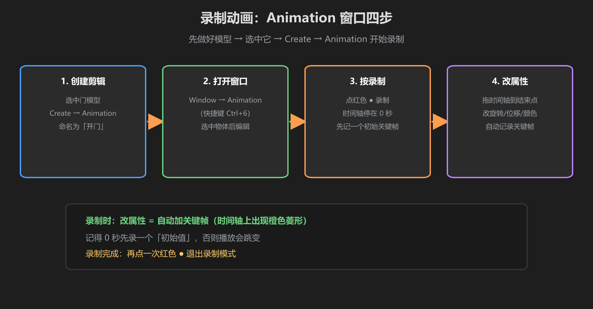
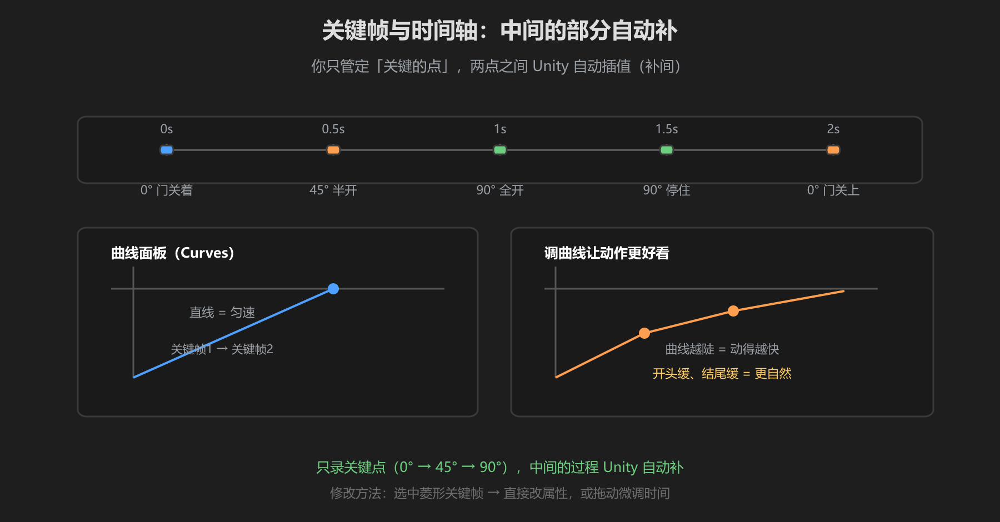

第 3 篇：动画剪辑 — 录制、关键帧、时间轴
Animation Clip 是动画的"原料"。做世界动画，最常用的方式是在 Unity 里直接录制，不用任何外部软件。
1. 创建并录制动画

图：选中物体 → Window → Animation → 点录制 → 改属性 → 自动记关键帧
- 选中要动画的物体（如门）
- 菜单
Window → Animation打开动画窗口 - 点
Create，命名并保存（如Door_Open） - 点红色录制按钮（●），开始记录
- 把时间指针拨到 0.5s，旋转门 90° —— Unity 自动在 0s 和 0.5s 各记一个关键帧
- 停止录制，播放预览
录制时改物体的任何属性（位置/旋转/缩放/颜色）都会被记成关键帧。先拨时间、再改属性 —— 顺序记牢。
2. 关键帧与时间轴

图：时间轴上菱形 = 关键帧，间隔决定速度，曲线控制加减速
- 关键帧：时间轴上的菱形，记录那一刻的属性值
- 关键帧之间：Unity 自动插值（平滑过渡）
- 曲线面板：控制加减速（默认线性/平滑，够用）
- 时长：拖动最后一个关键帧位置决定动画多长
两个关键帧：0s（关着）+ 0.5s（开着）= 一个 0.5 秒的开门动画。想要"先快后慢"的柔和感，就在曲线面板把曲线拉成缓出。
3. 一个状态一套动画
门需要两个 Clip：
Door_Closed：0 度（静止，1 帧即可）Door_Open：0s 关 → 0.5s 开到 90°- （想有"关门动画"就再录一个 Door_Close）
注意：动画会「记住」最后一帧。如果 Clip 只有开的过程，关回默认状态时要确保播放的是关门的 Clip，否则门会卡在开着的姿势。
学前检查清单
- 用 Animation 窗口录了一段物体动画
- 理解了关键帧和时间轴的关系
- 为门准备了两套 Clip（开/关）